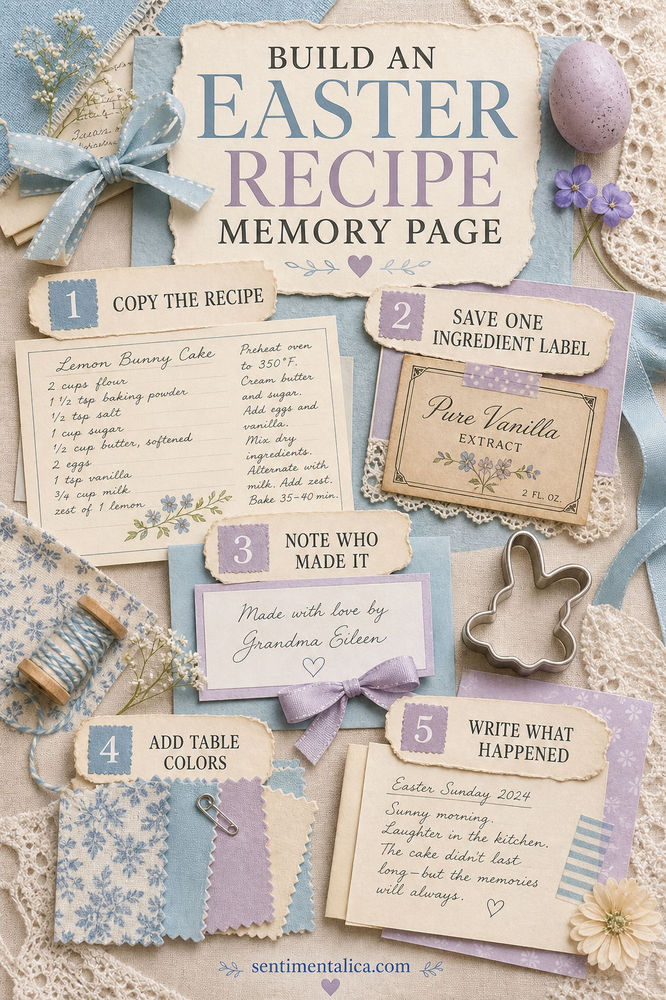
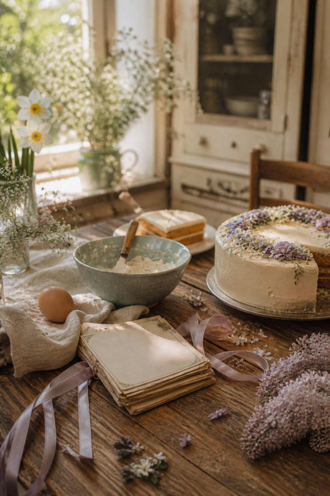

A recipe becomes a family keepsake when it records more than ingredients. Add who made it, what the table looked like, and the small thing that happened while everyone was waiting to eat.

Copy the recipe clearly
Write or print the full recipe on a removable card so it can still be used in the kitchen. Preserve unusual instructions and family wording. If the original is fragile, photograph it and store the original safely.
Save one ingredient trace
A flour label, tea tag, vanilla wrapper, or handwritten shopping-list line makes the page tactile. Clean it, trim it, and use only one. The purpose is recognition, not a complete inventory.
Name the person behind it
Record who made the dish and how the recipe reached you. If several people helped, include them. “Mixed by the children” may matter as much later as the name of the original baker.

Borrow colors from the table
Choose three: perhaps pale blue crockery, lilac ribbon, and buttercream icing. Use cream and kraft around them. This keeps the page seasonal without relying on a crowd of Easter symbols.
Write what happened
Add two or three lines about the day: the cake leaning, someone arriving early, laughter in the kitchen, or the first warm window opened. Date the note and tuck it behind the recipe card.
Make the page usable
Put the recipe in a pocket or photo corners rather than gluing it permanently. Leave enough room to remove it without bending. A small tab labeled with the dish name helps you find it later.
Include substitutions and real measurements
Family recipes often contain instructions such as “a little more milk” or “until it looks right.” Preserve those phrases, then add your own practical note after making the dish. Record pan size, oven differences, and substitutions on a separate card so the inherited wording remains visible.
Copy handwriting without losing the original
If the recipe is written by someone you love, scan or photograph it in good light. Print a working copy for the journal and store the original in an archival folder. Handwriting carries personality, but glue, kitchen moisture, and frequent handling can damage the only copy.
Add a small tasting note
Ask two people for one sentence each. A child's “best part was the icing” and an adult's memory of an earlier Easter create a conversation across the page. Write their names and the year beside the quotes.
Keep food away from the journal
Do not attach crumbs, dried peel, greasy wrappers, or anything that may attract pests. Use a clean label, copied ingredient illustration, or written scent description instead. The page can evoke the kitchen without containing food residue.
Next year, add a new note instead of rebuilding the page. A stain, a substitution, or a new person helping will show how the tradition changes while the recipe stays familiar.
Image note: Some visuals in this article were created with AI and curated by Sentimentalica.